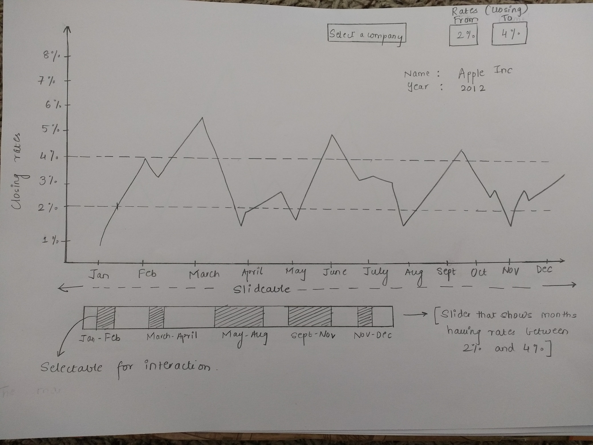

View 1

The first chart percentage of closing rates on Y-axis
The select company and Rates boxes are provided for interaction purpose where the user has to select the company which he wants to view and the rates between which he wants to view the stock
There is a small rectangular chart below which shows the result of the selection of rates of closing percentage. This chart also provides an interaction
On clicking one of the shaded regions on the small chart the line chart modifies to show a more detailed view of days between selected month
Say for instance Jan-Feb is selected then the chart modifies into a detailed view of days between January and February as below